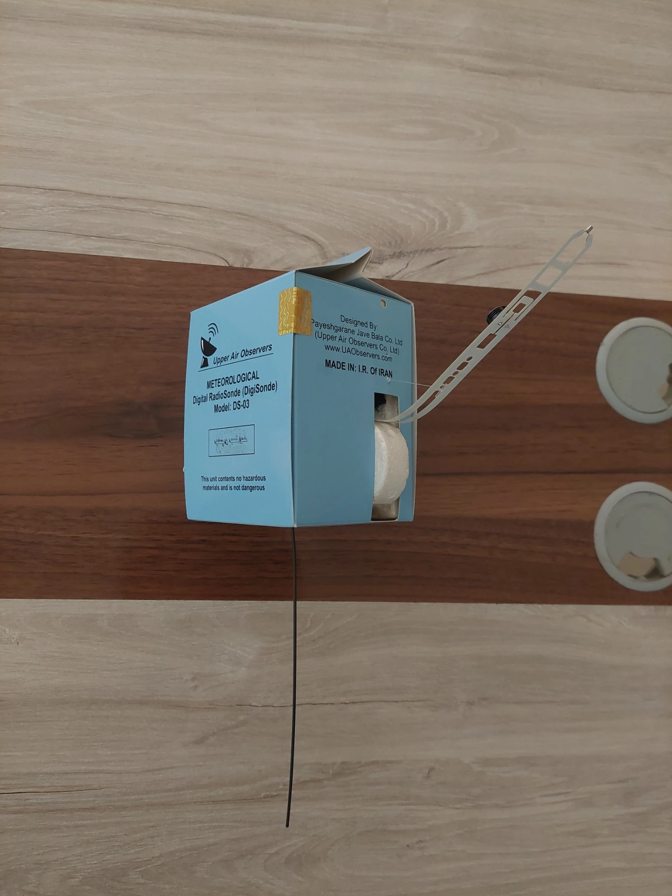
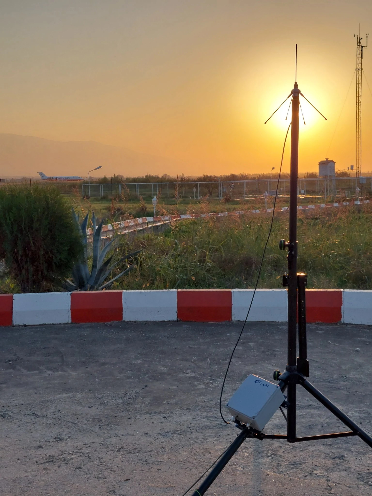
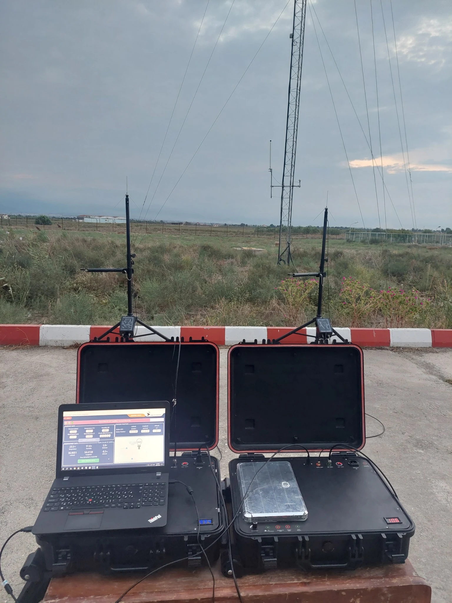
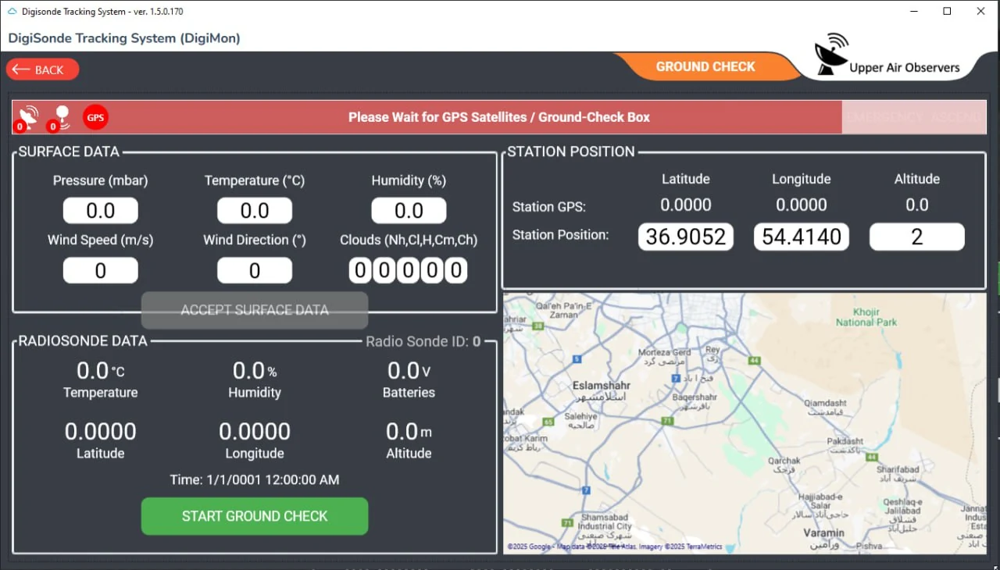
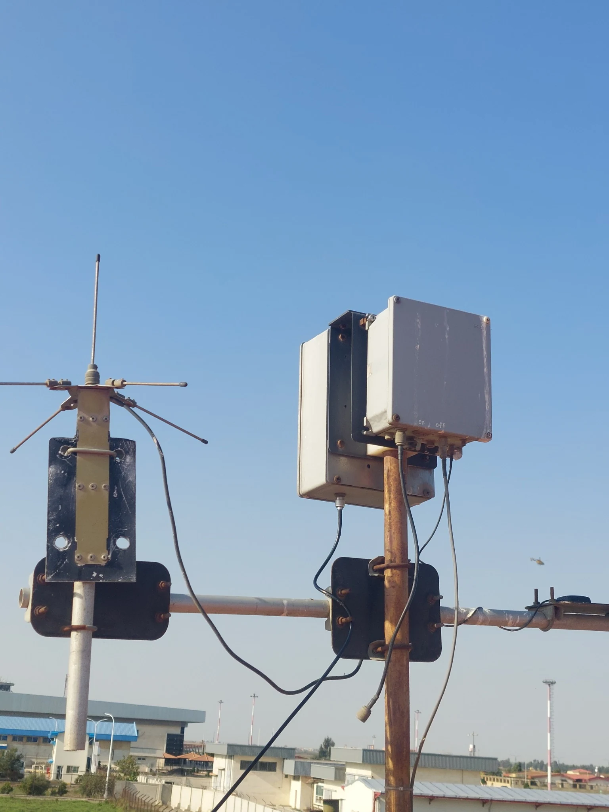
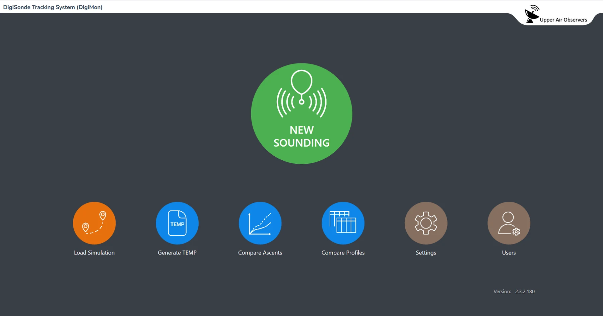
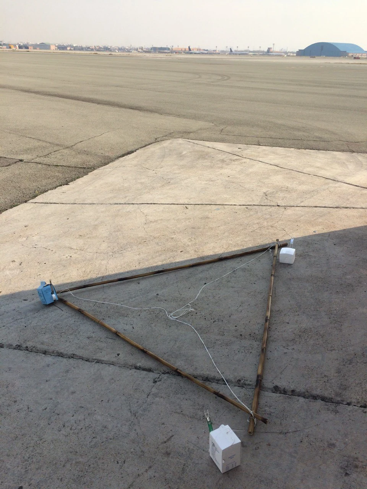
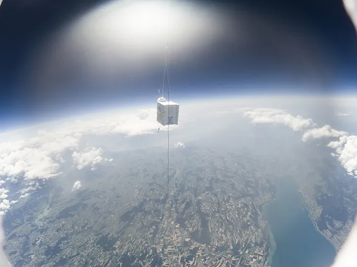
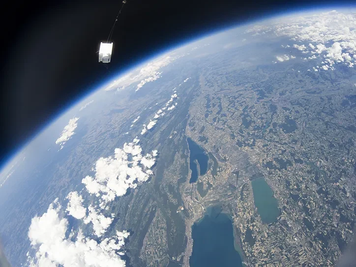

01
AIRBORNE INSTRUMENT
DigiSonde® Radiosonde
Balloon-borne PTU and GNSS telemetry for building a vertical atmospheric profile during ascent.
Product details →
UPPER-AIR SOUNDING SYSTEMS
A complete upper-air observation workflow built around the DigiSonde radiosonde, field-ready receiving hardware and DigiMon ground-station software.
ONE SOUNDING CHAIN
The DigiSonde measures atmospheric parameters aloft and sends telemetry by radio. The ground station receives the downlink and DigiMon supports the operational sounding workflow, from a new sounding through profile comparison and TEMP generation.

AIRBORNE INSTRUMENT
Balloon-borne PTU and GNSS telemetry for building a vertical atmospheric profile during ascent.
Product details →
FIELD HARDWARE
Receiving antennas, station electronics and portable field hardware for real-time radiosonde telemetry reception.
Hardware details →
OPERATIONS & DATA
Sounding control, ground check, TEMP generation, ascent comparison and profile comparison in one operational interface.
Software details →DIGISONDE®
DigiSonde is carried aloft by a weather balloon, measures atmospheric variables and transmits the observations to the ground station by radio. Pressure, temperature, relative humidity and wind are used to form the vertical atmospheric profile.
Specifications shown here are taken from the supplied DigiSonde catalogue.
GROUND-STATION HARDWARE
The complete sounding chain includes a downlink receiving antenna, ground-station electronics and a GPS antenna. The photographs below show Upper Air Observers hardware in portable field operation and a fixed receiving installation.


DIGIMON® GROUND STATION & SOUNDING SOFTWARE
DigiMon brings sounding operations and profile review into one interface. The supplied software screens include functions for starting a new sounding, performing ground check, loading a simulation, generating TEMP output and comparing ascents or profiles.
MEASUREMENT FLOW
ACTUAL FLIGHT IMAGERY
These added photos show the actual Upper Air Observers radiosonde in comparative test preparation on the runway and during flight at high altitude.



FIELD & COMPARATIVE TESTING
These photographs are from Upper Air Observers development and field work. One image shows comparative preparation with a GRAW radiosonde; no performance claim is implied by the photograph.
APPLICATION AREAS
The supplied UAO catalogue identifies meteorology, transportation and energy as application areas, with sounding data supporting organizations such as meteorological institutes, airports and airlines, transport authorities and renewable-energy operators.
Vertical atmospheric observations for operational analysis and forecasting workflows.
Upper-air information relevant to aviation and other weather-sensitive transport operations.
Atmospheric observations for weather-sensitive energy and renewable-energy activities.
DOCUMENTATION
The documents below are the supplied Upper Air Observers catalogues used as the technical source for this product introduction.
UPPER AIR OBSERVERS
For DigiSonde radiosondes, ground-station hardware, DigiMon software or technical cooperation, contact Upper Air Observers.